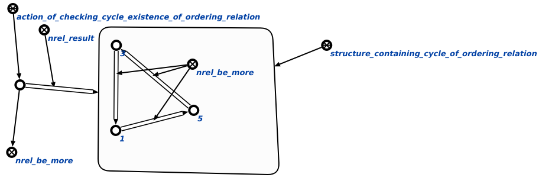

Команда поиска цикла предназначена для обнаружения в базе знаний таких ошибок, как циклы. Единственным аргументом команды является отношение порядка, наличие зацикленности которого необходимо проверить. Если циклы не найдены, то результатом выполнения команды является пустой узел ответа. Результат выполнения команды поиска циклов на отношении включения показан ниже:
